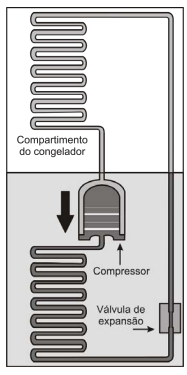

150. (Enem PPL 2014)
Para a proteção contra curtos-circuitos em residências são utilizados disjuntores, compostos por duas lâminas de metais diferentes, com suas superfícies soldadas uma à outra, ou seja, uma lâmina bimetálica. Essa lâmina toca o contato elétrico, fechando o circuito e deixando a corrente elétrica passar. Quando da passagem de uma corrente superior à estipulada (limite), a lâmina se curva para um dos lados, afastando-se do contato elétrico e, assim, interrompendo o circuito. Isso ocorre porque os metais da lâmina possuem uma característica física cuja resposta é diferente para a mesma corrente elétrica que passa no circuito.
A característica física que deve ser observada para a escolha dos dois metais dessa lâmina bimetálica é o coeficiente de

1) O que acontece com uma lâmina bimetálica quando aquecida?
2) Por que isso acontece?
Assinale a alternativa correta: